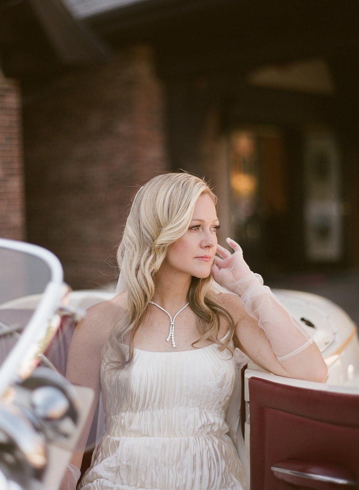
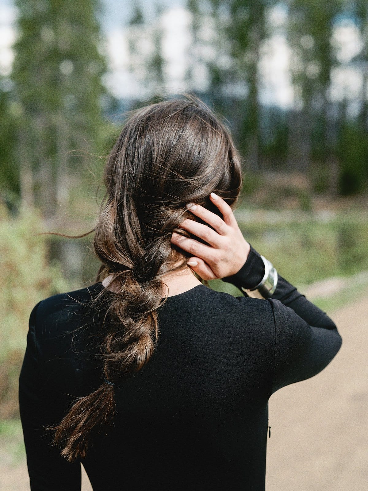
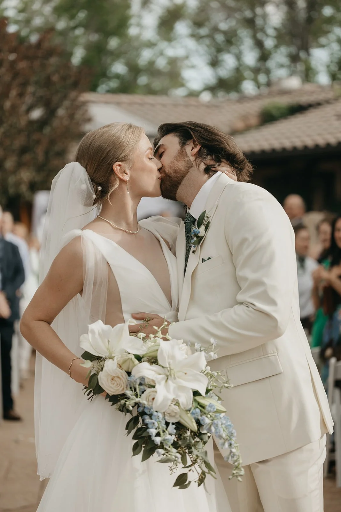
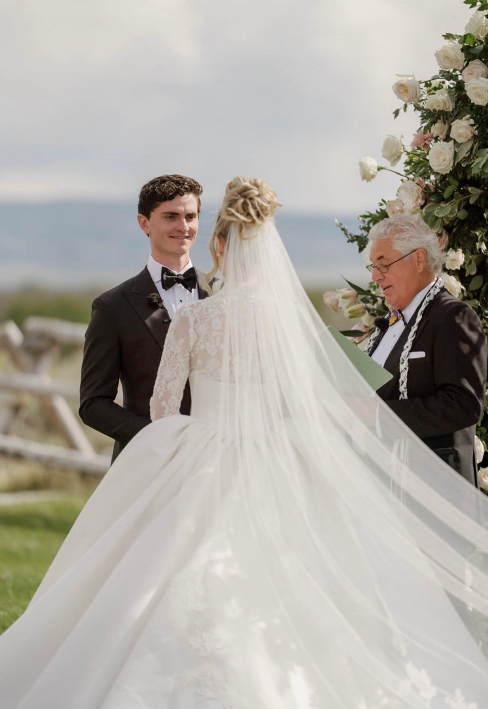
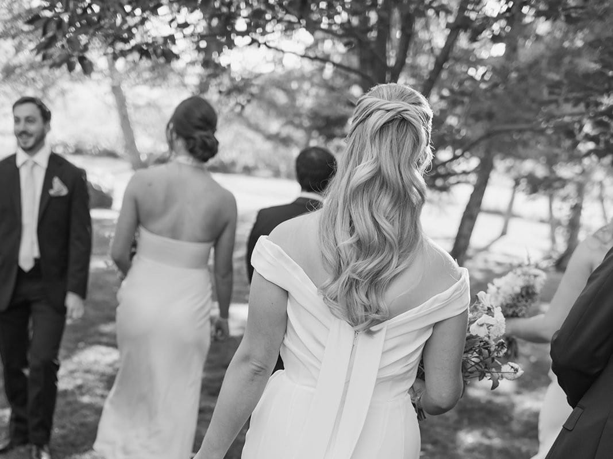
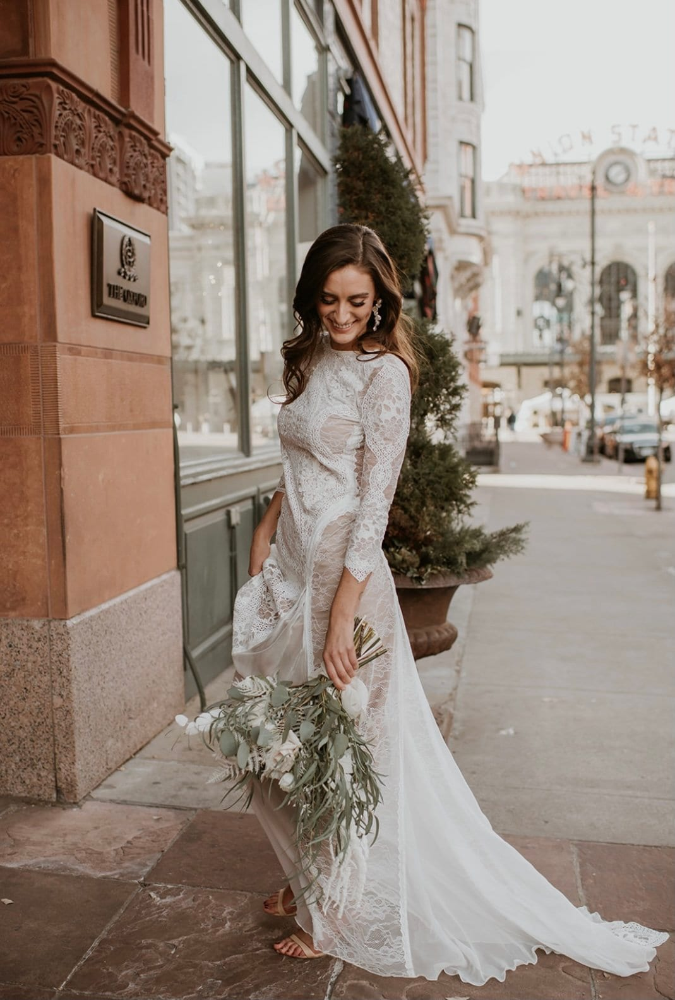

On our Preferred Vendor List
Grace Martin: wedding hair and makeup in Denver.
You’ll probably be photographed more on your wedding day than on any other day of your life. Grace Martin has spent her career getting people ready for the camera, so she’s a great person to have with you.
Grace is a Denver hair and makeup artist who works on weddings, magazine covers, national commercials, television and film. She works with all hair textures and skin tones.
Grace Martin at a glance
- What she offers
- She offers hair and makeup for weddings, film and television, commercials, fashion shoots and live events, and she does men’s grooming, too.
- Where she works
- She’s based in Denver, and she travels for work, with jobs from Los Angeles to New York.
- Film and television
- She was Key Hairstylist for the full first season of Deion Sanders’ show We Got Time Today, and her film credits include Last Looks, Needle Road and The Let Go.
- Magazines and brands
- Her work has appeared in Vogue Italia, Denver Life Magazine and Cherry Creek Lifestyle, and she’s worked with brands including Nike, Clairol, The North Face and Crocs.
Wedding hair and makeup in Denver
Grace’s bridal portfolio includes soft waves, loose braids, sleek pulled-back styles and updos, so there’s a good chance you’ll see something you love.
It also includes work at Brush Creek Ranch, Cherry Hills Country Club and Devils Thumb Ranch. Her work from Cherry Hills and Devils Thumb has been published in Rocky Mountain Bride, too.
Producers, photographers and creative directors rely on Grace for polished work in fast-paced settings. That’s a great thing to have on a wedding day, when the photographer is waiting and the timing can get tight.
Wedding hair by Grace Martin








All of the hair on this page is by Grace Martin. The photographs come from her portfolio, with work by Jess Leigh, Hannah Quintana, Sarah Porter, Alicia Rinka and Shelly Anderson.
Hair and makeup for film, TV and commercial shoots
If your company is planning a commercial, a press junket or a celebrity event, Grace can help with that, too. She’s known for camera-ready hair and makeup for executives, professional athletes, musicians and television personalities, and for her discretion on set.
Her celebrity work includes William H. Macy, Troy Aikman, Christian McCaffrey, Pam Grier and Kirk Franklin, just to name a few.
You can see more of her work in her bridal portfolio and her selected work. To check your date or ask about a shoot, reach out to Grace through her website.
Need live music for your wedding, too?
From the ceremony to the dance floor, we book live music all over Colorado. Take a look at live music for your wedding, or just send us your date.